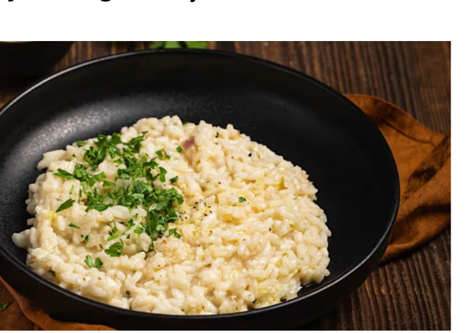

As a son, there can be few things better than arriving home to the smell of your favourite meal. This collection is a tribute to those who make these marvellous meals for us. We hope you enjoy them as much as we do.
It is also a quiet tribute to the mothers, fathers, guardians and family members whose care so often reaches us through food.
Nishim


...
...
...
...